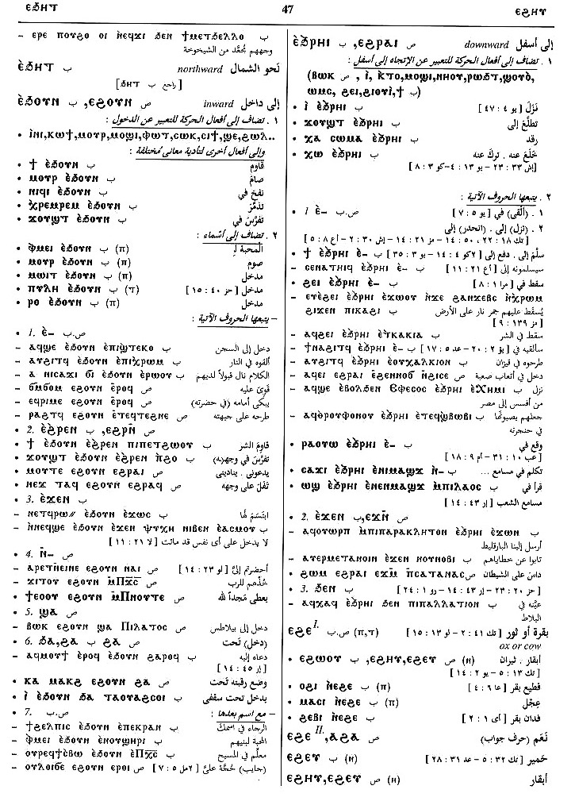

(noun male/female)
ass [ονοσ]

(S, sA)
ⲉⲓⲱ
(S) ⲉⲉⲓⲱ, ⲉⲓⲟⲩ, ⲉⲟⲩ
(A) ⲓⲟⲩ
(S, B, F) ⲓⲱ
(S, B) ⲓⲁⲱ, ⲉⲱ
(S) ⲉⲓⲁ-, ⲓⲁ-
(A, F) ⲉⲓⲁ-
(B) ⲓⲁ-
(S) plural: ⲉⲟⲟⲩ, ⲉⲱⲟⲩ
(S) female: ⲉⲓⲱⲟⲩⲉ, ⲉⲟⲟⲩⲉ
(A) female: ⲉⲁⲩⲉ
(B) female: ⲉⲉⲩ, ⲉϩⲉⲩ
(S) ⲉⲉⲓⲱ, ⲉⲓⲟⲩ, ⲉⲟⲩ
(A) ⲓⲟⲩ
(S, B, F) ⲓⲱ
(S, B) ⲓⲁⲱ, ⲉⲱ
(S) ⲉⲓⲁ-, ⲓⲁ-
(A, F) ⲉⲓⲁ-
(B) ⲓⲁ-
(S) plural: ⲉⲟⲟⲩ, ⲉⲱⲟⲩ
(S) female: ⲉⲓⲱⲟⲩⲉ, ⲉⲟⲟⲩⲉ
(A) female: ⲉⲁⲩⲉ
(B) female: ⲉⲉⲩ, ⲉϩⲉⲩ
| (S, A, B, F) ⲉⲓⲁ ⲛⲧⲟⲟⲩ, ⲓⲁ ⲛⲧⲟⲟⲩ | desert, wild ass [ονοσ αγριοσ]328 | Crum: 76a | |||||||
| (S) ⲉⲓⲁϩⲟⲟⲩⲧ | wild ass329 | ||||||||
| (S, B) ⲉⲓⲁ ⲛⲥϩⲓⲙⲉ, ⲉⲓⲁ ⲥϩⲓⲙⲉ | she ass330 | ||||||||
| (F) ⲙⲉⲥⲓⲱ | young ass331 | ||||||||
See also:
| view | (S, F) ⲥⲏϭ (A) ⲥⲓϭ, ⲥⲓⲉⲓϭ (B) ⲥⲏϫ (S) ⲥⲉⲉϭⲉ | (noun male) foal of ass, horse [πωλοσ]1548 |
| view | (S) ⲡⲟⲣⲕ, ⲡⲟⲣⲉⲕ (Sf, A, F) ⲡⲁⲣⲕ (B) ⲫⲟⲣⲕ | (noun male) B once
foal, calf with ⲙⲁⲥ- SAB, ⲙⲉⲥ- S mule [ημιονοσ, ρεδη]1278 |
| view | (S) ⲃⲟⲉⲓⲧ (Sa) ⲃⲁⲓⲧ | (noun male/female) ox or cow [βουσ, τραγοσ]607 |
| view | (S, A, B) ⲉϩⲉ (F) ⲁϩⲏ (S) ⲉϩⲟⲟⲩ, ⲉϩⲏⲩ (S, A, B) ⲉϩⲉⲩ (sA) ⲉϩⲁⲩ (B) ⲉϩⲱⲟⲩ, ⲉϩⲉⲟⲩ (F) ⲁϩⲁⲩ, ⲏϩⲁⲟⲩ | (noun male/female) cow [βουσ, βουκολιον]682 |
| view | (S, A) ⲃⲁϩⲥⲉ (B) ⲃⲁϩⲥⲓ (F) ⲃⲉϩⲥⲓ | (noun female) heifer [δαμαλισ]2742 |
| view | (S) ⲕⲧⲏⲣ | (noun male) calf [μοσχαριον, δαμαλισ]880 |
| view | (S, A, sA) ⲙⲓⲥⲉ (B, F) ⲙⲓⲥⲓ (O) ⲙⲉⲥⲓⲉ | (verb) intr: bear, bring
forth [τικτειν, γενναν]
tr: bear young qual: be newly delivered, give suck26 |
| view | (S, sA) ⲧⲃⲛⲏ (A) ⲧⲃⲛⲓ (B, F) ⲧⲉⲃⲛⲏ (F) ⲧⲩⲃⲛⲏ (S) ⲧⲃⲛⲟⲟⲩⲉ, ⲧⲉⲃⲛⲏⲟⲩ, ⲧϥⲛⲏⲩ, ⲧⲃⲛⲉⲩ (Sa, A) ⲧⲃⲛⲉⲩⲉ (Sa) ⲧⲃⲛⲏⲩⲉ (A) ⲧⲃⲛⲉⲟⲩⲉ (sA) ⲧⲃⲛⲁⲩⲉ (B) ⲧⲃⲛⲱⲟⲩⲓ (F) ⲧⲃⲛⲁⲩⲓ, ⲧⲃⲛⲁⲟⲩⲉⲓ, ⲧⲉϥⲛⲁⲩⲉⲓ | (noun male) beast, domestic animal [κτηνοσ, τετραπουσ, ζωον, υποζυγιον]712 |
| view | (S, A) ϩⲧⲟ, ϩⲧⲱ (S) ⲉϩⲧⲟ (B) ϩⲑⲟ (F) ϩⲧⲁ, ⲉϩⲧⲁ (S) ϩⲧⲱⲣⲉ, ϩⲧⲟⲟⲣⲉ (sA) ϩⲧⲱⲣⲏ, ϩⲧⲟⲣⲏ (B) ϩⲑⲟⲣⲓ, ⲉϩⲑⲟⲣⲓ (F) ϩⲧⲁⲣⲓ, ϩⲧⲁⲁⲣⲓ, ⲉϩⲧⲁⲣⲓ, ⲉϩⲧⲁⲁⲣⲓ (S, F) ϩⲧⲱⲱⲣ, ⲉϩⲧⲱⲱⲣ (S) ϩⲧⲱⲱⲣⲉ, ⲉϩⲧⲱⲱⲣⲉ (S, A, F) ϩⲧⲱⲣ (B) ϩⲑⲱⲣ, ⲉϩⲑⲱⲣ, ϩⲑⲟⲣ (A) ϩⲧⲟⲩⲣⲉⲩⲉ | (noun male) horse [ιπποσ]
f, mare [ιπποσ, φοροσ]2303 |
Crum: 75,76

75

76
Dawoud: 86a,
78a, 46a, 47b

86

78

46

47